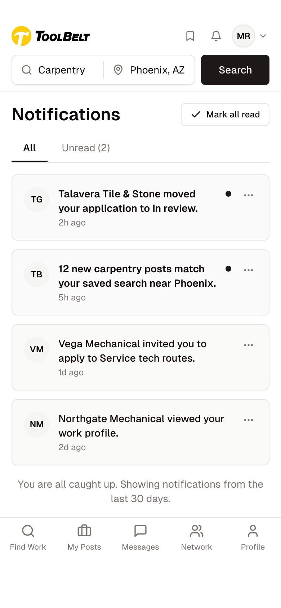
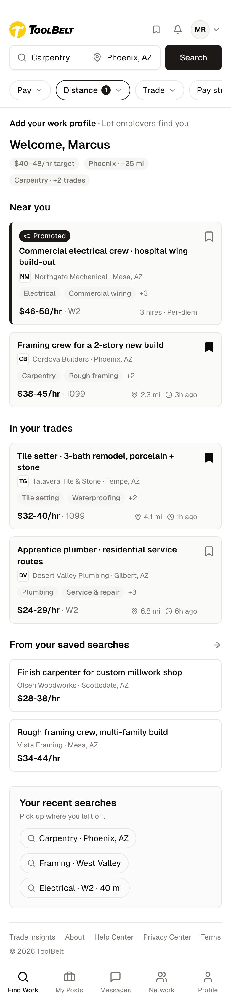
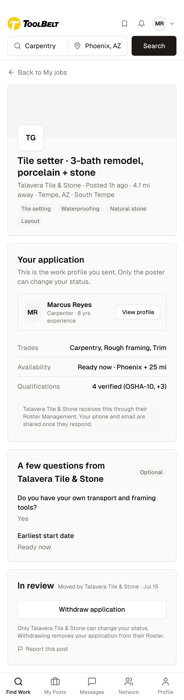
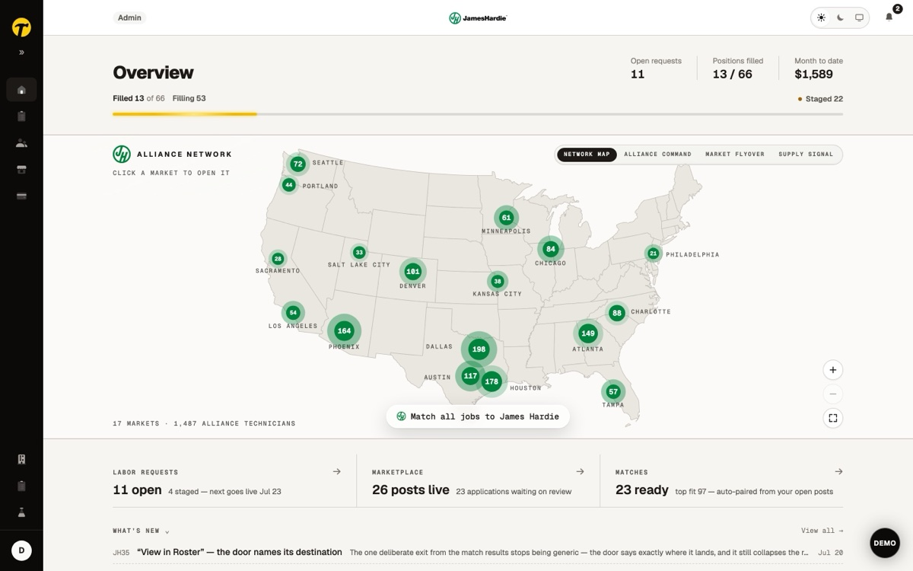
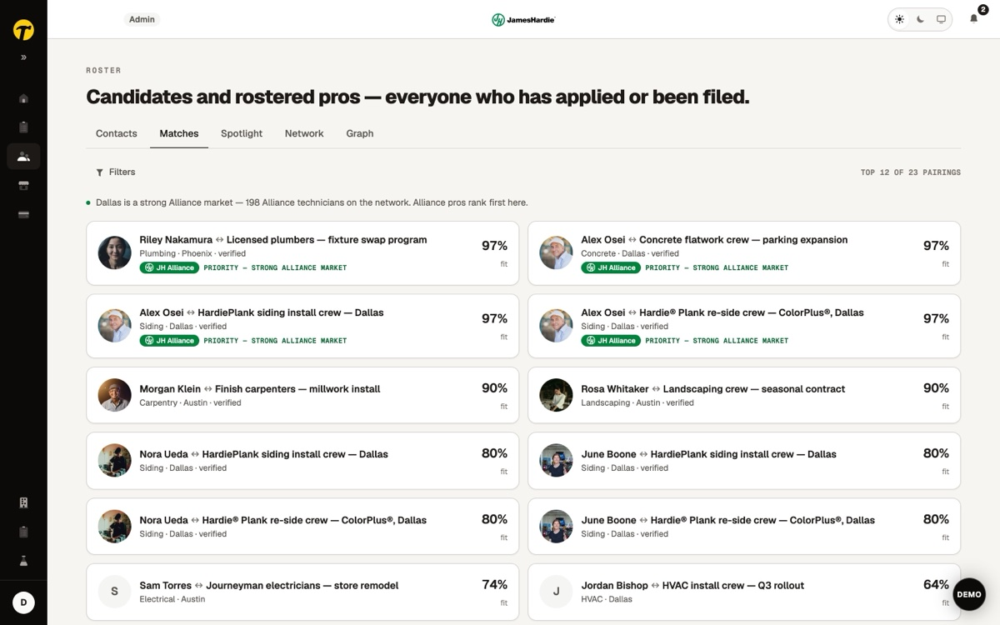
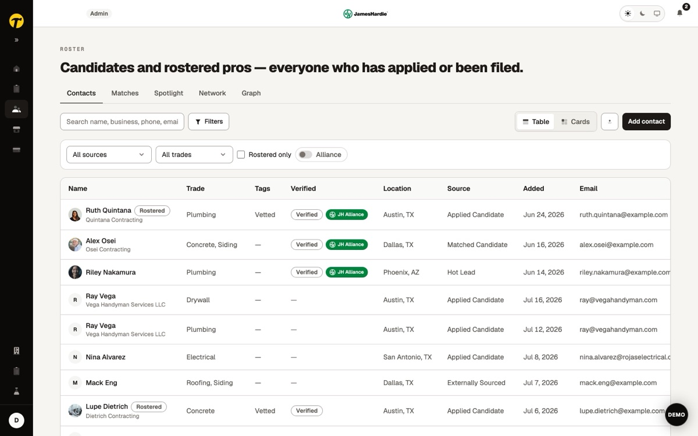
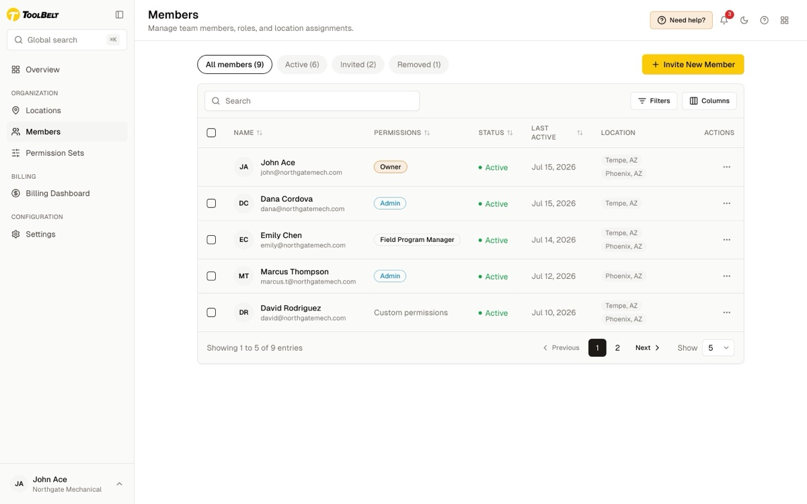
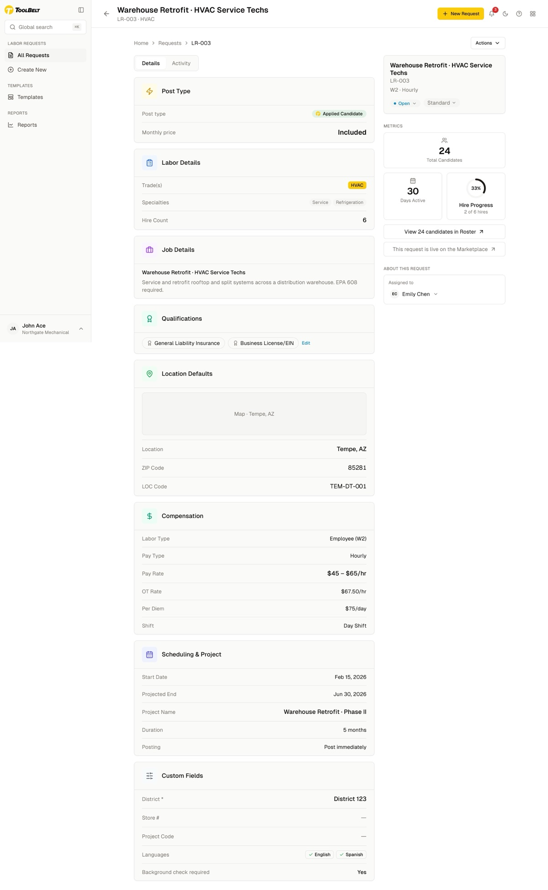

Individuals and businesses want completely different things from ToolBelt. So we build two purpose-built products, and connect them where it matters: a two-sided marketplace where workers meet work. The individual side of that marketplace is the missing link this proposal is really about.
A proposal to align on direction, not a finished spec. The prototype and Figma files are idea-sharing artifacts; final requirements and designs will evolve with the business team and other designers on the project.
The streamlined individual experience, think "Chuck in a truck," is a separate product from the business app suite. Keeping the two apart, and letting them meet only at the marketplace, is what makes this work. And that individual side, the piece treated most lightly so far, is the missing link this proposal most needs to align on.
The two experiences do not mix. They connect only at the marketplace, a two-sided flywheel: businesses bring the jobs, and the streamlined individual experience, with its viral networking loops, brings more users.
Individuals and small one-operator companies. Networking and viral loops that pull in more users. Find work, apply, build a profile.
Jobs flow in from the business side. Users flow in from the individual viral loop. Applications route into the business's Roster. More users attract more businesses, more jobs attract more users.
Businesses and org admins. CRM-style vetting of contacts in the Roster, labor requests, org, members and permissions, and hiring.
Until now this layer has been treated at a surface level, sketched in the PRDs and referred to in passing while the business suite got the depth. It is the missing link, and the flywheel does not turn without it. A standalone consumer product for individuals and small operators, separate from the business suite, on the proven Indeed model: a mobile-native app (iOS + Android) with a desktop companion that mirrors the exact same UI. It is where the networking and viral growth happen, so it leads on mobile, and it is the layer we most need to align on.
This is not a new idea bolted on. Most people looking for work today are already funneled into a mobile experience they are stuck with. The real opportunity is to upgrade it: modernize the mobile experience end-users are forced into, add the new features that align to where ToolBelt is going, and build a companion desktop app to match. The missing link is the overdue upgrade to the experience users already live in.



We are not inventing a structure. Indeed runs the same two-sided split we propose: a mobile-native job-seeker app with a desktop companion, and a separate employer dashboard, connected by matching. Our recommendation is backed by the pattern that already works at scale for labor.
A job-seeker experience and a separate Employer Dashboard, connected by matching and recommendations, not merged into one app.
Native iOS and Android (100M+ Android installs), with "apply from your phone" as a first-class flow, plus a desktop companion.
Roughly two in three job applications are submitted on mobile, and about 95% of users reach the internet on a smartphone.
Sources: Indeed matching + hiring platform, Indeed Employer Dashboard, Indeed mobile app and App Store listing, Appcast mobile-vs-desktop job-search trends.
This is the new emerging direction for the business apps: the Next prototype. We take its portal shell and chrome, and integrate the qualified items from our PRDs plus the UI and micro-interactions we need from Figma into it, not the Figma shell. It brings a portal with auto-matching, a geographic view of jobs and pros, and a matches pipeline. The individual "Chuck in a truck" experience stays a separate product.



These qualified capabilities from our work fold into the Next prototype shown above. Labor Requests, a CRM-style Roster for vetting contacts, and granular org permissions get integrated into that Portal shell, along with the specific Figma UI and micro-interactions we need. Desktop-first, responsive for the essentials on mobile.


The phone is the primary product. Native iOS and Android builds carry the networking and viral loop. The desktop web app mirrors the exact mobile-forward UI.
Primary: phone · Desktop: mirrorThe desktop is the primary work surface for org admin, labor requests, and roster. It is responsive so a mobile user can log in and handle the essentials.
Primary: desktop · Mobile: responsiveEach side feeds the other. The streamlined individual experience is the acquisition engine for the supply side; the business suite creates the demand.
Viral networking loops on a mobile-forward experience grow the worker base, the supply.
Org admins post labor requests, creating the demand that makes the marketplace worth showing up for.
Applications route into the Roster; more users attract more businesses, more jobs attract more users.
The individual and business apps stay separate. Their signal flows into one place, the marketplace, where workers meet work.
Same destination: a mobile-forward individual experience that upgrades what job-seekers use today and feeds the marketplace. Two ways to build it. This is the call we are asking the team to make.
Build the upgrade as its own standalone, mobile-native app (iOS + Android) with a desktop companion that mirrors it, on the proven Indeed model. Purpose-built for the consumer loop.
Streamline the Next business app into a lighter, simplified experience for the individual user. Reuses the shell we are already building.
The working prototype and three FigJam boards, from strategy to every screen and interaction.